在屋里，也在海边坐一会儿。
4.3 · 手部与袖口修整 · 近岸浪声随画面起落 · 保留0597人物在室内坐进沙发或扶手椅，或者沿着玻璃屋的木露台走下台阶，走到临海岩石前，转向海面、后退靠近坐面，慢慢坐下。听一会儿海浪和风，再起身走回露台。
点击「走到岩石旁」后，人物只会走到近旁停住。点击「坐下 · E」或按 E 才会坐下；坐多久由你决定，再点「起身 · E」或按 E 站起来，继续自己走动。也可以直接用 WASD / 方向按钮走近岩石正面，靠近后坐下。「自动往返演示」保留完整路线，「返回露台」单独负责带路返回。
坐下前先前倾、再向后降低重心；起身先前倾把重量移回双脚，随后伸腿，双手随大腿支撑和释放。镜头沿人物外侧绕行并限制转动速度；拖动环视后会保留你的视角。声音和右上暂停继续可用。
让手放稳，让浪声跟着浪走 · 当前4.3
保留0597自己的脸、发型、眼镜、身体与西装，局部修整双手、腕部和袖口。坐着时手掌朝向支撑面，一手放大腿、一手搭扶手；沙发中段仍是双手放大腿。手部表面取自本项目已保存的MIT成人手部资产，没有采用供体头部。
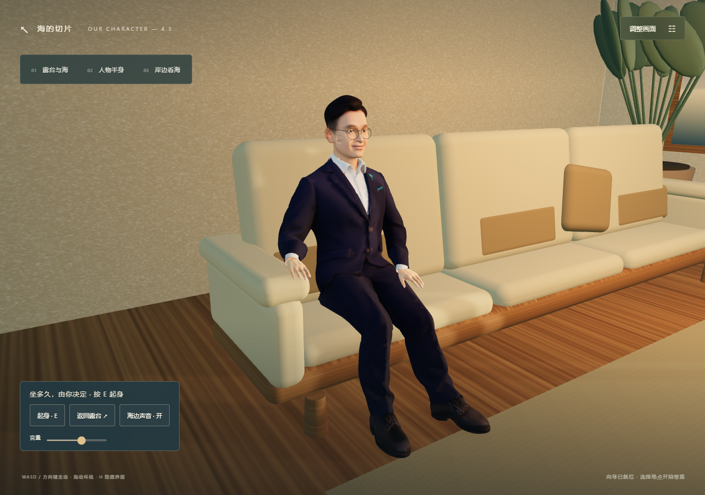
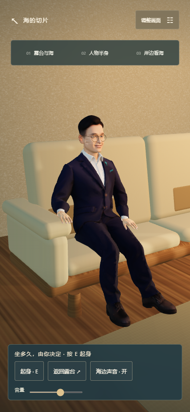
录自当前网页的同一画布和实际混音，动作原速。近景仍能看到部分袖管衔接与原服装生成痕迹；手指当前为放松形体，没有独立抓握表演。
查看实际网页手部近景
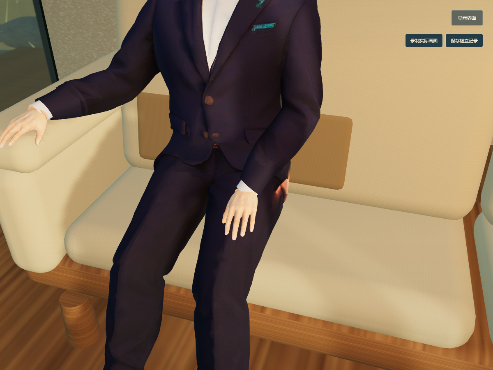
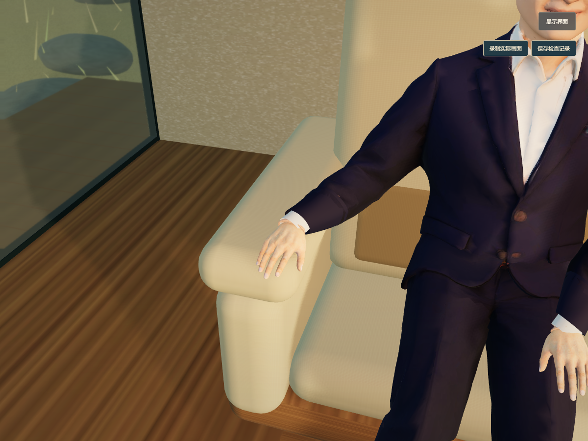
同一片近岸浪，同一套起落节奏
此前海浪录音独立循环，响起的浪头可能与画面错开。现在近岸浪唇、残沫和声音共用场景时间：浪头翻起时增强破浪声，泡沫铺开、回落时转为较柔和的水声；原录音仅作低音量的远处底声。暂停时画面与声音一起停，关闭近岸薄浪时相应声层也关闭。
此段直接录制网页实际WebAudio输出，未另配音轨。使用真实录音处理成均匀水声纹理，再由人物附近一段近岸浪群的相位控制强弱，并按距离与室内外位置混音。属于浪群节奏联动，尚非每一朵浪花的物理声学；风声仍为低音量处理素材。
走到沙发前，就能坐下 · 保留4.2记录
自己走到沙发正面后，会立即显示「在沙发坐下 · E」。系统按距离选择沙发两端或中间的座位；点按钮或按 E 后直接转身对位，不必先走回原来的固定触发点。起身后回到你原来站的位置。
键盘和屏幕方向按钮的起步、停步与动画切换更快。室内移动也已排除楼板下岸边石头造成的隐形阻挡；室外岩石和家具继续保持碰撞。
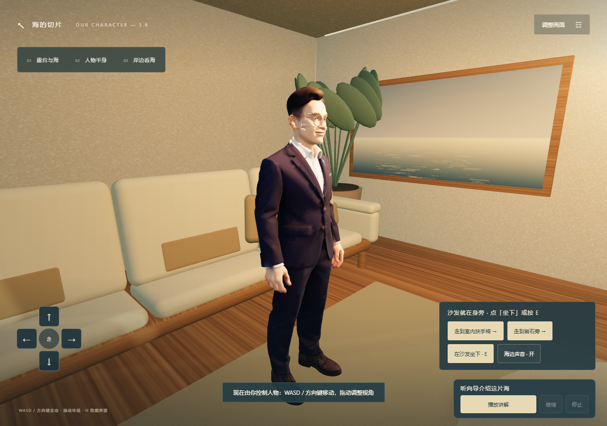
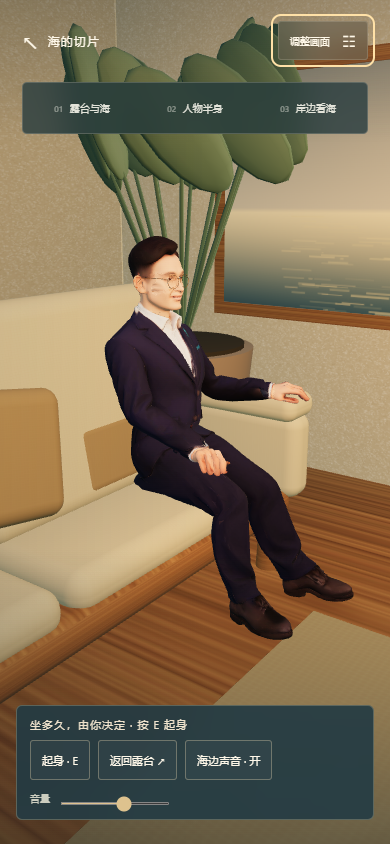
当前按三处已适配座位就近对齐，尚非任意连续位置的软体坐姿。识别与响应实测记录
沙发姿态与动作 · 保留4.1实录
点击「走到室内沙发」，人物沿桌旁通道走到沙发前停下。再点「在沙发坐下 · E」或按 E，才会转身、靠近、慢慢坐下。坐多久由你决定；再点「起身 · E」或按 E，起身后留在近旁，继续自己走动。
这一处安排在靠扶手的位置：身体轻靠后，一侧前臂搭扶手，另一只手放在大腿上，双脚稍微错开、踩住地板。坐垫前缘让出小腿空间，腰背由靠垫承托；起身先把重心移到双脚，再抬起身体。
实际网页的三维画布与同一环境混音录制，动作原速，没有另配音轨或生成替代动画。下图为普通网页界面的实际截图。
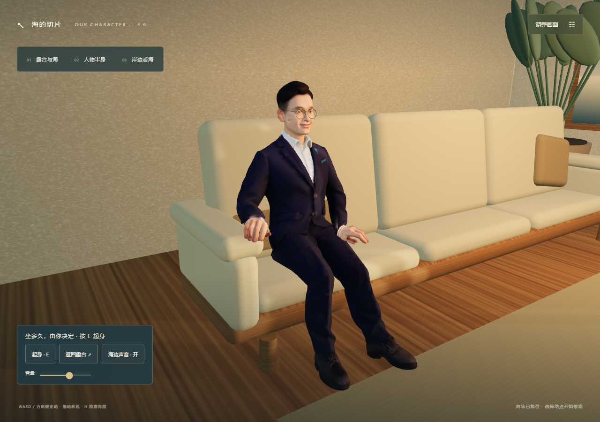
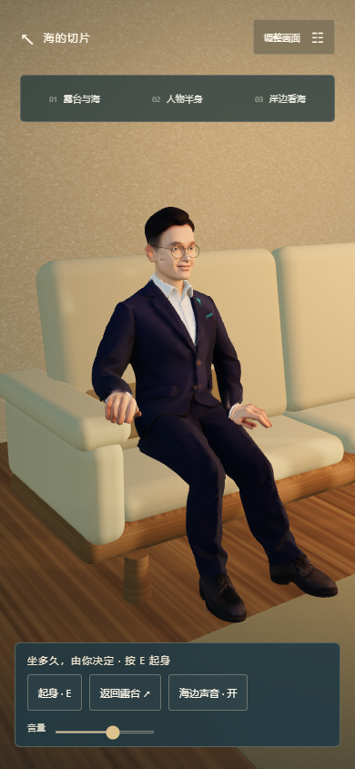
4.1实录展示靠扶手的位置；当前4.2已增加沙发中间和另一端的就近识别；扶手椅和海边岩石继续可用。尚未实现任意位置就座、软垫受压或完整衣服物理，下载的基础人物GLB保持原文件。本轮完整检查记录
扶手椅 · 保留4.0实录
点击「走到室内扶手椅」，人物会正常走进房间、停在椅前。再点「在扶手椅坐下 · E」或按 E 才落座；可以一直坐着休息，再点「起身 · E」继续自己走动。也能直接走近椅子正面再坐下。
室内采用独立坐姿：臀部落在坐垫上，身体轻微后靠，肩肘放松，前臂沿着扶手放下，双脚踩住地板。坐下与起身先转移重心；手机机位留出两侧扶手、双脚和操作按钮的空间。
录自本轮实际网页的同一三维画布与环境混音。动作原速，仅剪去等待和长时间静坐；没有另配音轨或生成替代动画。原始WebM与检查记录保留。
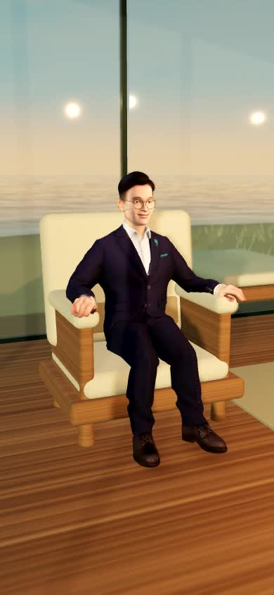
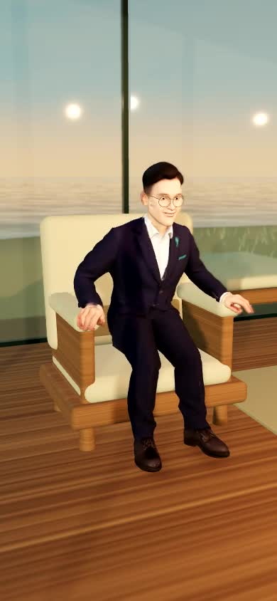
4.0实录展示室内扶手椅；沙发已在上方4.1接入。其他石头尚未适配；坐姿为网页运行时驱动，下载的基础GLB保持原文件。本轮实际检查记录
海边自主坐下 · 保留3.9实录
录制自同一个实时网页的三维画布和实际环境音轨。原实录中由用户自主停留约64秒，节选只缩短静坐与结束空白，动作保持原速；视口尺寸统一为1280×1000，编码24fps。没有另行生成动画或替换人物。
看海，也看接触
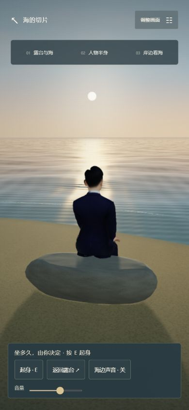
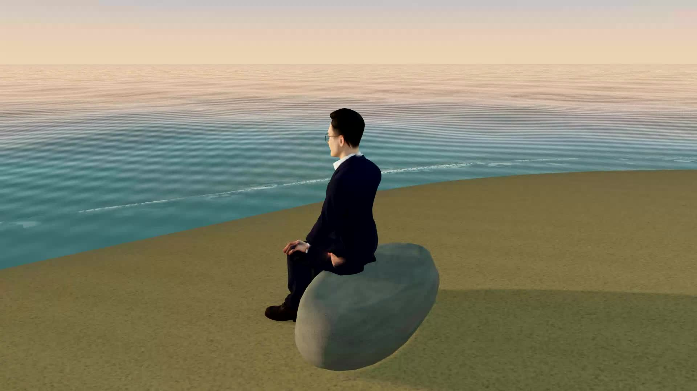
使用我们自己的0597脸、发型、眼镜、身体和西装；原有眨眼保留，坐下看海时视线不再追随镜头。身体通过骨盆、脊柱、手臂与双腿配合完成坐下与起身，双脚逐渐调整到稳定位置，后摆在坐姿时折起。
海浪与风使用已有授权的实录素材，脚步按木板/沙地和实际触地触发；屋内声音更闷、更轻，讲解时环境音降低。风声原录于林间，本场景作低音量过滤混音，并非海边同期录音。3.9至4.2的录音独立循环；当前4.3在上方记录了近岸浪群相位联动的改进。
当前适配了沙发三处座位、一把室内扶手椅和一块海边岩石，仍有程序化动作感，尚非任意石头都可坐或完整布料物理。坐姿、后摆修正与环境声音在网页运行时工作；当前下载包含局部手部修正，原始与3.6人物文件仍保留。
声音来源与制作记录
海浪：Calm ocean waves · SamsterBirdies；风：WIND - 1 · SamuelGremaud。两者来源页标注CC0，均复用本机已有处理片段，保留原速原调。脚步为本地合成音效。
制作：rock-seat.js、seated-pose.js、seat-coat.js、guide-controller.js、seaside-audio.js。录音来源与校验值 · 实际网页流程检查。坐姿自然度与最终画面仍以实际观看为准。
保留上一轮3.8自动往返实录
下方是3.8旧版动作与镜头，保留作对照；当前手部与浪声请看4.3；旧沙发4.1、扶手椅4.0与海边3.9保留用于过程对照。